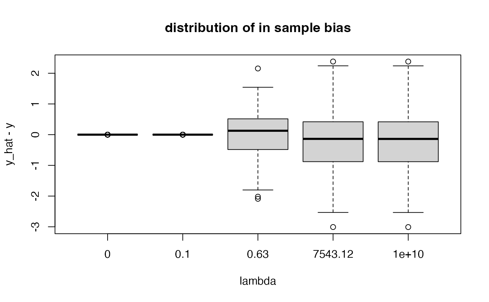

Predict from Matern 3/2 model
predict.matern32.RdPredict from Matern 3/2 model
Usage
# S3 method for class 'matern32'
predict(fit_obj, newx, ci = NULL)Examples
n <- 100 ; p <- 4
set.seed(456)
X <- matrix(rnorm(n * p), n, p) # no intercept!
y <- rnorm(n)
lams <- 10^seq(-10, 10, length.out = 50)
fit_obj <- fit_matern32(x = X, y = y, lambda = lams)
df <- data.frame(predict(fit_obj, X) - y)
colnames(df) <- paste0(round(lams, 2))
summary(df)
#> 0 0 0
#> Min. :-1.511e-08 Min. :-3.868e-08 Min. :-9.901e-08
#> 1st Qu.:-7.327e-10 1st Qu.:-1.875e-09 1st Qu.:-4.800e-09
#> Median : 5.513e-11 Median : 1.410e-10 Median : 3.611e-10
#> Mean :-9.290e-13 Mean :-2.400e-12 Mean :-5.970e-12
#> 3rd Qu.: 7.478e-10 3rd Qu.: 1.914e-09 3rd Qu.: 4.899e-09
#> Max. : 1.341e-08 Max. : 3.431e-08 Max. : 8.782e-08
#> 0 0 0
#> Min. :-2.534e-07 Min. :-6.487e-07 Min. :-1.660e-06
#> 1st Qu.:-1.229e-08 1st Qu.:-3.145e-08 1st Qu.:-8.049e-08
#> Median : 9.242e-10 Median : 2.365e-09 Median : 6.054e-09
#> Mean :-1.539e-11 Mean :-3.960e-11 Mean :-1.017e-10
#> 3rd Qu.: 1.254e-08 3rd Qu.: 3.210e-08 3rd Qu.: 8.215e-08
#> Max. : 2.248e-07 Max. : 5.754e-07 Max. : 1.473e-06
#> 0 0 0
#> Min. :-4.250e-06 Min. :-1.088e-05 Min. :-2.784e-05
#> 1st Qu.:-2.060e-07 1st Qu.:-5.273e-07 1st Qu.:-1.350e-06
#> Median : 1.550e-08 Median : 3.967e-08 Median : 1.015e-07
#> Mean :-2.600e-10 Mean :-6.660e-10 Mean :-1.704e-09
#> 3rd Qu.: 2.103e-07 3rd Qu.: 5.382e-07 3rd Qu.: 1.378e-06
#> Max. : 3.769e-06 Max. : 9.648e-06 Max. : 2.469e-05
#> 0 0 0
#> Min. :-7.125e-05 Min. :-1.823e-04 Min. :-4.665e-04
#> 1st Qu.:-3.455e-06 1st Qu.:-8.842e-06 1st Qu.:-2.263e-05
#> Median : 2.600e-07 Median : 6.662e-07 Median : 1.710e-06
#> Mean :-4.360e-09 Mean :-1.116e-08 Mean :-2.860e-08
#> 3rd Qu.: 3.526e-06 3rd Qu.: 9.024e-06 3rd Qu.: 2.310e-05
#> Max. : 6.320e-05 Max. : 1.617e-04 Max. : 4.138e-04
#> 0 0 0
#> Min. :-1.193e-03 Min. :-3.046e-03 Min. :-7.747e-03
#> 1st Qu.:-5.791e-05 1st Qu.:-1.482e-04 1st Qu.:-3.789e-04
#> Median : 4.406e-06 Median : 1.147e-05 Median : 3.062e-05
#> Mean :-7.310e-08 Mean :-1.867e-07 Mean :-4.760e-07
#> 3rd Qu.: 5.910e-05 3rd Qu.: 1.512e-04 3rd Qu.: 3.865e-04
#> Max. : 1.058e-03 Max. : 2.701e-03 Max. : 6.870e-03
#> 0 0 0
#> Min. :-1.951e-02 Min. :-4.799e-02 Min. :-0.1116966
#> 1st Qu.:-9.674e-04 1st Qu.:-2.461e-03 1st Qu.:-0.0060195
#> Median : 8.645e-05 Median : 2.708e-04 Median : 0.0009714
#> Mean :-1.207e-06 Mean :-3.020e-06 Mean :-0.0000073
#> 3rd Qu.: 9.858e-04 3rd Qu.: 2.502e-03 3rd Qu.: 0.0062749
#> Max. : 1.730e-02 Max. : 4.250e-02 Max. : 0.0986614
#> 0 0.01 0.01
#> Min. :-2.322e-01 Min. :-0.4029851 Min. :-0.5704203
#> 1st Qu.:-1.463e-02 1st Qu.:-0.0350340 1st Qu.:-0.0830885
#> Median : 3.162e-03 Median : 0.0070835 Median : 0.0132774
#> Mean :-1.645e-05 Mean :-0.0000321 Mean :-0.0000425
#> 3rd Qu.: 1.552e-02 3rd Qu.: 0.0388045 3rd Qu.: 0.0864749
#> Max. : 2.039e-01 Max. : 0.3490836 Max. : 0.6732146
#> 0.04 0.1 0.24
#> Min. :-0.8349389 Min. :-1.2203430 Min. :-1.626056
#> 1st Qu.:-0.1667309 1st Qu.:-0.2855362 1st Qu.:-0.421260
#> Median : 0.0245471 Median : 0.0659113 Median : 0.108845
#> Mean : 0.0000362 Mean : 0.0005033 Mean : 0.001809
#> 3rd Qu.: 0.1653571 3rd Qu.: 0.2722738 3rd Qu.: 0.393448
#> Max. : 1.1607681 Max. : 1.6344409 Max. : 1.964242
#> 0.63 1.6 4.09 10.48
#> Min. :-2.088143 Min. :-2.404146 Min. :-2.579385 Min. :-2.69845
#> 1st Qu.:-0.482777 1st Qu.:-0.536540 1st Qu.:-0.610570 1st Qu.:-0.68334
#> Median : 0.127733 Median : 0.134156 Median : 0.085328 Median : 0.09063
#> Mean : 0.003522 Mean : 0.002667 Mean :-0.007627 Mean :-0.03713
#> 3rd Qu.: 0.511726 3rd Qu.: 0.527199 3rd Qu.: 0.536568 3rd Qu.: 0.55753
#> Max. : 2.155172 Max. : 2.266422 Max. : 2.338769 Max. : 2.37875
#> 26.83 68.66 175.75 449.84
#> Min. :-2.80314 Min. :-2.89227 Min. :-2.9528 Min. :-2.9849
#> 1st Qu.:-0.73921 1st Qu.:-0.80154 1st Qu.:-0.8412 1st Qu.:-0.8627
#> Median : 0.02021 Median :-0.05046 Median :-0.0906 Median :-0.1139
#> Mean :-0.09043 Mean :-0.15383 Mean :-0.2034 Mean :-0.2312
#> 3rd Qu.: 0.53537 3rd Qu.: 0.50015 3rd Qu.: 0.4613 3rd Qu.: 0.4372
#> Max. : 2.41512 Max. : 2.41783 Max. : 2.4027 Max. : 2.3909
#> 1151.4 2947.05 7543.12 19306.98
#> Min. :-2.9994 Min. :-3.0054 Min. :-3.0078 Min. :-3.0088
#> 1st Qu.:-0.8726 1st Qu.:-0.8767 1st Qu.:-0.8783 1st Qu.:-0.8790
#> Median :-0.1286 Median :-0.1347 Median :-0.1372 Median :-0.1382
#> Mean :-0.2440 Mean :-0.2494 Mean :-0.2515 Mean :-0.2524
#> 3rd Qu.: 0.4258 3rd Qu.: 0.4209 3rd Qu.: 0.4190 3rd Qu.: 0.4182
#> Max. : 2.3850 Max. : 2.3824 Max. : 2.3813 Max. : 2.3809
#> 49417.13 126485.52 323745.75 828642.77
#> Min. :-3.0092 Min. :-3.0093 Min. :-3.0094 Min. :-3.0094
#> 1st Qu.:-0.8792 1st Qu.:-0.8793 1st Qu.:-0.8794 1st Qu.:-0.8794
#> Median :-0.1386 Median :-0.1387 Median :-0.1388 Median :-0.1388
#> Mean :-0.2527 Mean :-0.2528 Mean :-0.2529 Mean :-0.2529
#> 3rd Qu.: 0.4179 3rd Qu.: 0.4178 3rd Qu.: 0.4177 3rd Qu.: 0.4177
#> Max. : 2.3807 Max. : 2.3807 Max. : 2.3807 Max. : 2.3806
#> 2120950.89 5428675.44 13894954.94 35564803.06
#> Min. :-3.0094 Min. :-3.0094 Min. :-3.0094 Min. :-3.0094
#> 1st Qu.:-0.8794 1st Qu.:-0.8794 1st Qu.:-0.8794 1st Qu.:-0.8794
#> Median :-0.1388 Median :-0.1388 Median :-0.1388 Median :-0.1388
#> Mean :-0.2529 Mean :-0.2529 Mean :-0.2529 Mean :-0.2529
#> 3rd Qu.: 0.4177 3rd Qu.: 0.4177 3rd Qu.: 0.4177 3rd Qu.: 0.4177
#> Max. : 2.3806 Max. : 2.3806 Max. : 2.3806 Max. : 2.3806
#> 91029817.8 232995181.05 596362331.66 1526417967.18
#> Min. :-3.0094 Min. :-3.0094 Min. :-3.0094 Min. :-3.0094
#> 1st Qu.:-0.8794 1st Qu.:-0.8794 1st Qu.:-0.8794 1st Qu.:-0.8794
#> Median :-0.1388 Median :-0.1388 Median :-0.1388 Median :-0.1388
#> Mean :-0.2529 Mean :-0.2529 Mean :-0.2529 Mean :-0.2529
#> 3rd Qu.: 0.4177 3rd Qu.: 0.4177 3rd Qu.: 0.4177 3rd Qu.: 0.4177
#> Max. : 2.3806 Max. : 2.3806 Max. : 2.3806 Max. : 2.3806
#> 3906939937.05 1e+10
#> Min. :-3.0094 Min. :-3.0094
#> 1st Qu.:-0.8794 1st Qu.:-0.8794
#> Median :-0.1388 Median :-0.1388
#> Mean :-0.2529 Mean :-0.2529
#> 3rd Qu.: 0.4177 3rd Qu.: 0.4177
#> Max. : 2.3806 Max. : 2.3806
boxplot(df[, c(1, 10, 25, 35, 50)],
main = "distribution of in sample bias",
xlab = "lambda", ylab = "y_hat - y")
